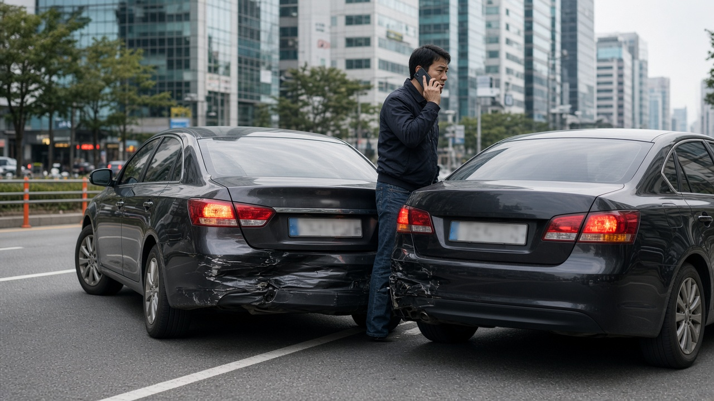
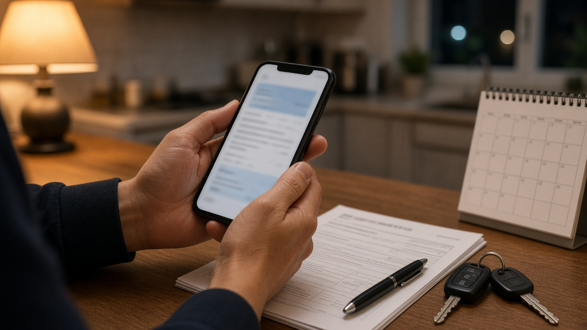

가족한정 자동차보험, 형제가 내 차를 몰다 사고 나면 대인배상1만 남는 이유와 전날 들어야 하는 특약
주말에 형이나 동생이 잠깐 차를 빌려 가겠다고 하면 대부분 별생각 없이 키를 건네게 돼요. 그런데 내 자동차보험이 가족한정으로 되어 있다면 이야기가 달라져요. 많은 분들이 형제자매도 당연히 가족이라고 생각하시는데, 자동차보험에서 말하는 가족에는 형제자매가 빠져 있거든요. 오늘은 운전자 범위 밖의 사람이 운전하다 사고가 나면 무엇이 보상되고 무엇이 막히는지, 그리고 미리 막을 수 있는 방법은 무엇인지 차근차근 정리해 볼게요.
범위 밖 운전자가 사고를 내면 대인배상1만 남아요
운전자 범위 한정 특약은 운전할 수 있는 사람을 줄이는 대신 보험료를 깎아 주는 약속이에요. 그래서 약속한 범위에 없는 사람이 운전하다 사고를 내면 보험사는 원칙적으로 보상하지 않아요.
예외가 하나 있는데 바로 대인배상1이에요. 대인배상1은 자동차손해배상보장법에 따라 모든 차가 반드시 들어야 하는 의무보험이라서, 운전자 범위를 어겨도 피해자의 신체 피해에 대해서는 이 한도 안에서 보상이 나가요. 손해보험협회 소비자포털 안내를 보면 자가용의 대인배상1 한도는 사망과 후유장애 최고 1억5천만원, 부상 최고 3천만원이에요.
반대로 말하면 상대 차 수리비를 물어 주는 대물배상, 대인배상1 한도를 넘는 피해를 메우는 대인배상2, 운전한 사람이 다친 경우의 자기신체사고, 내 차 수리비인 자기차량손해는 막힌다고 보셔야 해요. 피해가 크면 한도를 넘는 금액은 운전한 사람과 차 주인이 직접 책임져야 하는 문제로 남아요.

보험에서 말하는 가족에 형제자매는 들어가지 않아요
가족한정이라고 하면 넓게 느껴지지만 약관에 적힌 범위는 생각보다 좁아요. 보험사 안내 자료를 보면 가족 범위는 피보험자 본인과 부모, 법률상 배우자나 사실혼 배우자, 배우자의 부모, 자녀, 며느리와 사위까지예요. 양부모와 계부모도 포함되지만 형제자매는 포함되지 않는다고 분명히 적혀 있어요.
그래서 형제자매까지 자주 운전한다면 가족과 형제자매 한정처럼 범위를 넓힌 특약이 따로 있는지 확인해 봐야 해요. 손해보험협회 안내 기준으로 보험료는 모든 운전자, 가족과 형제자매, 가족, 부부, 기명피보험자 1인 순서로 점점 낮아져요. 범위를 좁힐수록 싸지는 대신 그만큼 빈틈도 커진다는 뜻이에요.
부부한정도 마찬가지예요. 금융감독원은 부부한정 특약에 가입한 차를 자녀가 운전하다 낸 사고는 보상되지 않는다는 예를 들어 안내했어요. 운전면허를 막 딴 자녀가 있는 집이라면 특히 한 번 더 보셔야 하는 부분이에요.
연령 한정은 사고 날짜의 만 나이로 봐요
운전자 범위와 함께 자주 어기게 되는 것이 연령 한정이에요. 만 26세 이상이나 만 30세 이상처럼 나이를 정해 두면 보험료가 내려가는데, 정한 나이보다 어린 사람이 운전하다 사고를 내면 이 역시 대인배상1만 보상돼요.
여기서 나이는 사고가 난 날을 기준으로 주민등록상 생년월일에 따른 만 나이로 따져요. 생일이 며칠 남지 않았더라도 사고 당일에 만 26세가 되지 않았다면 만 26세 이상 한정에서는 보상이 막힌다는 뜻이에요.
가족 중 누군가 나이 기준을 막 넘었거나 아직 못 미친다면, 보험 기간 중간이라도 보험사에 연락해서 연령 범위를 바꿀 수 있어요. 운전자 범위나 연령을 바꾸면 보험사에 알려야 그 뒤 사고가 제대로 처리된다는 점도 보험사 안내에 함께 적혀 있어요.

잠깐 맡길 일이 있다면 출발 전날 특약부터
가끔 한 번씩 다른 사람이 운전해야 한다면 범위를 통째로 넓히기보다 짧은 기간만 넓히는 방법이 있어요. 보험사마다 이름은 조금씩 다르지만 단기 운전자 확대 특약이나 임시운전자 특약이라고 부르고, 가입한 기간 동안에는 범위 밖 사람이 운전해도 내 보험의 보장 그대로 처리돼요.
가장 많이 놓치는 부분은 시작 시간이에요. 금융감독원과 손해보험협회 안내 모두 이런 특약은 가입한 날 밤 12시부터 보장이 시작된다고 설명해요. 출발하는 날 아침에 가입하면 그날 사고는 보상받지 못할 수 있으니 반드시 하루 전에 들어 두셔야 해요. 일부 보험사는 가입 즉시 효력이 생기는 상품도 운영한다는 보도가 있으니 가입할 때 시작 시점을 꼭 확인하세요.
반대로 내가 다른 사람 차를 운전하는 경우라면 내 보험의 다른 자동차 운전 특약을 확인해 보세요. 본인과 운전자 범위에 든 배우자가 남의 차를 운전하다 낸 사고에 대해 대인배상, 대물배상, 자기신체사고를 보상하고, 부모와 자녀 추가 특약을 들면 그 범위가 넓어져요. 빌린 차의 수리비까지 받으려면 별도의 차량손해 지원 특약이 필요하다는 점도 함께 알아 두시면 좋아요.
차 키를 건네기 전에 확인할 세 가지
첫째로 보험증권에서 운전자 범위와 연령 한정이 무엇으로 되어 있는지 확인하세요. 보험사 앱이나 홈페이지에서 바로 볼 수 있고, 헷갈리면 고객센터에 물어보는 것이 가장 정확해요.
둘째로 운전할 사람이 그 범위와 나이에 실제로 들어가는지 따져 보세요. 형제자매, 조카, 친구, 직장 동료는 가족한정 범위 밖이라는 점을 기억하시면 대부분의 실수를 피할 수 있어요.
셋째로 범위 밖이라면 운전 전날까지 단기 운전자 확대 특약을 넣어 두세요. 대리운전 기사가 운전한 사고는 보험사마다 처리 기준이 따로 있으니 이것도 약관에서 확인해 두시면 좋아요. 오늘 내용은 10월 27일 기준 금융감독원과 손해보험협회, 보험사 공개 안내를 바탕으로 정리한 일반 정보이고, 실제 보상 여부는 가입한 상품의 약관에 따라 달라질 수 있어요.
참고 자료 금융감독원 2026년 2월 9일 설 연휴 자동차보험 안내 보도자료, 손해보험협회 소비자포털 자주 묻는 질문, 하나손해보험 자동차보험 가입자 유의사항 안내, 한화손해보험 다이렉트 자동차보험 유의사항, 이투데이 2026년 2월 단기 운전자 확대 특약 보도
태그 자동차보험 가족한정 운전자범위한정특약 단기운전자확대특약 임시운전자특약 다른자동차운전특약 대인배상1 연령한정특약 형제자매운전 자동차보험보상